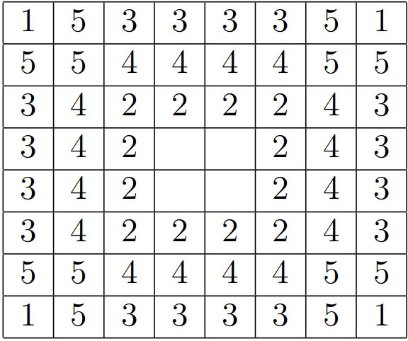

Software Design Final Project
We had decided on a game, Go, that required orders of magnitude more computation than chess when relying on the computer to decide on a move. In order to work out an algorithm, we needed to either completely separate the algorithm from the game or try the algorithm on simpler games.
If we had completely separated the AI algorithms from a game implementation, the algorithm would be easier to analyze on an abstract level. Going from pseudo-code to Python would also be more intuitive. However, it would require a lot of scaffolding in code in order to test.
If we use the same AI algorithms, but on simpler games, such as Tic-Tac-Toe, the testing scaffold would be built. However, difficulty arises when integrating an algorithm with previously written code and adapting an algorithm to the rules of specific games.
In the end, we decided to be more goal oriented and decided to try the AI algorithms on simpler games, including Tic-Tac-Toe and Checkers, and move up to a Go implementation, since making a useable AI aligned more with our learning goals. This required a redesigning of our project proposal so that our minimum deliverable, a working AI for Go, would not be our barely tangible final deliverable.
We decided to split the work amongst ourselves. Each team member researched AI algorithms that interested us in an effort to learn about and implement the algorithm. Amongst all three of us, we are exploring and applying Markov Chains, Monte Carlo Tree Searches, Rapid Action Value Estimator (RAVE), David Rutland Methods, Neural Networks, and Genetic Algorithms. Once we have working implementations of each algorithm on different games, we will teach each other our algorithms and perhaps play our AIs against each other.
Instead of implementing the methods we were exploring from before (Markov Chains, Monte Carlo Tree Searches, etc.), we stuck with using MiniMax, a basic algorithm that uses the best possible opponent's move to determine the best move possible for the computer by minimizing the opponent's maximum value. After successfully incorporating this idea inefficiently but conceptually accurately in Tic-Tac-Toe, we moved on to a more efficient calculating in Othello. In Othello, the “value” of the board, with respect to the computer, is calculated by multiplying each of the pieces by the effectiveness of their current position. This effectiveness is a weight given to a certain tile on the board. This mimics the Roxanne method of laying out an Othello board, according to page 15 of a dissertation. The board is laid out with priorities set below:
